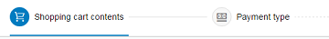

What's New in OpenUI5 1.36
With this release the UI development toolkit for HTML5 (OpenUI5) is upgraded from version 1.34 to 1.36.
In the following sections, we list the main new features and enhancements to OpenUI5. For a complete, detailed list of all new and enhanced functions, see: Change Log.
-
The OData Model V2 now supports binding against function import parameters. If the function import returns result data, then this result data can also be accessed and bound. For more information, see OData V2 Model.
-
You can use jQuery.sap.measure to measure the performance of your JavaScript code. You can retrieve the results via APIs. You can calculate averages and use filters or categories. For more information, see Performance Measurement Using jQuery.sap.measure.
-
Performance improvements:
-
When possible, data requests will now be send out before rendering is triggered to improve overall end-to-end times.
-
Initial auto-expand to n levels is now supported in TreeTable for OData-based services with fewer requests based on a new OData annotation.
-
-
Relative time formatter for sap.ui.core.format.DateFormat: The new formatting options short and narrow for the relativeStyle allow a concise display of a relative date like 3 years ago or 2 hours ago.
-
ABAP NUMC types are now supported in annotation processing and OData types as follows:
-
ABAP NUMC types can be represented in OData services as Edm.String with OData v2 SAP Extension 'sap:display-format="NonNegative"' and constraint 'maxlength' set.
-
ODataMetaModel also provides the OData v2 SAP Extension 'sap:display-format="NonNegative"' as v4 annotation '"com.sap.vocabularies.Common.v1.IsDigitSequence": { "Bool" : "true" }'. For more information, see Meta Model for OData V2.
-
AnnotationHelper.format considers the 'com.sap.vocabularies.Common.v1.IsDigitSequence' annotation and 'maxlength' constraint when creating a binding. For more information, see Annotation Helper.
-
sap.ui.model.odata.type.String reacts to the 'com.sap.vocabularies.Common.v1.IsDigitSequence' annotation and 'maxlength' constraint when processing its values.
For more information, see the API Reference in the Demo Kit.
-
-
sap.m.FlexBox: The FlexBox control now allows wrapping items into multiple lines and influencing the layout of these lines. The sizing behavior of flex items can be adjusted with minimum or maximum width and height values.
For more information, see the API Reference for sap.m.FlexBox and sap.m.FlexItemData in the Demo Kit.
-
sap.m.MultiInput: This control now has the new property maxTokens, which defines the maximum number of tokens that are allowed within the MultiInput.
For more information, see the API Reference and the sample in the Explored app in the Demo Kit.
-
sap.m.SearchField: This control now has a new suggestions feature. When a user enters something in the search field, the application can now display a list of suggestions.

For more information, see the API Reference and the sample in the Explored app in the Demo Kit.
-
sap.m.TimePicker: A user can now edit or delete values directly from the input field on mobile devices.
-
sap.m.UploadCollection: You can now download an item from the upload collection list. For this feature, two new methods have been added, one to the UploadCollection and the other to the UploadCollectionItem. This means you can choose from where you want to call the method. Both methods allow you to define if the default download location of the browser is used or if the file dialog is called via a parameter to store to a different location. For more information, see Upload Collection, the API Reference, and the sample in the Explored app in the Demo Kit.
-
sap.m.Wizard: You can now add titles for steps (in addition to icons) that are shown in the progress navigator of a wizard. Titles help users to relate the progress navigation part to the step content easily.
For more information, see the sample in the Explored app in the Demo Kit.
-
sap.ui.layout.DynamicSideContent: You can now configure the position of the side content to appear either to the left or to the right of the main content.
For more information, see the API Reference in the Demo Kit.
-
sap.ui.layout.form.Form and sap.ui.layout.form.SimpleForm: Toolbars can now be used in Form or FormContainer headers.

For more information, see the API Reference for Form, FormContainer, and SimpleForm and the samples for FormToolbar and SimpleFormToolbar in the Explored app in the Demo Kit.
-
sap.ui.layout.form.SimpleForm: This control now has the new property backgroundDesign, which can be used to switch between different backgrounds.
For more information, see the API Reference in the Demo Kit.
As of this version, OpenUI5 supports Microsoft Windows 10, Microsoft Internet Explorer 11, Microsoft Edge, Edge on touch devices, Edge on Microsoft Windows Phones, and SAP Fiori Client 1.6.